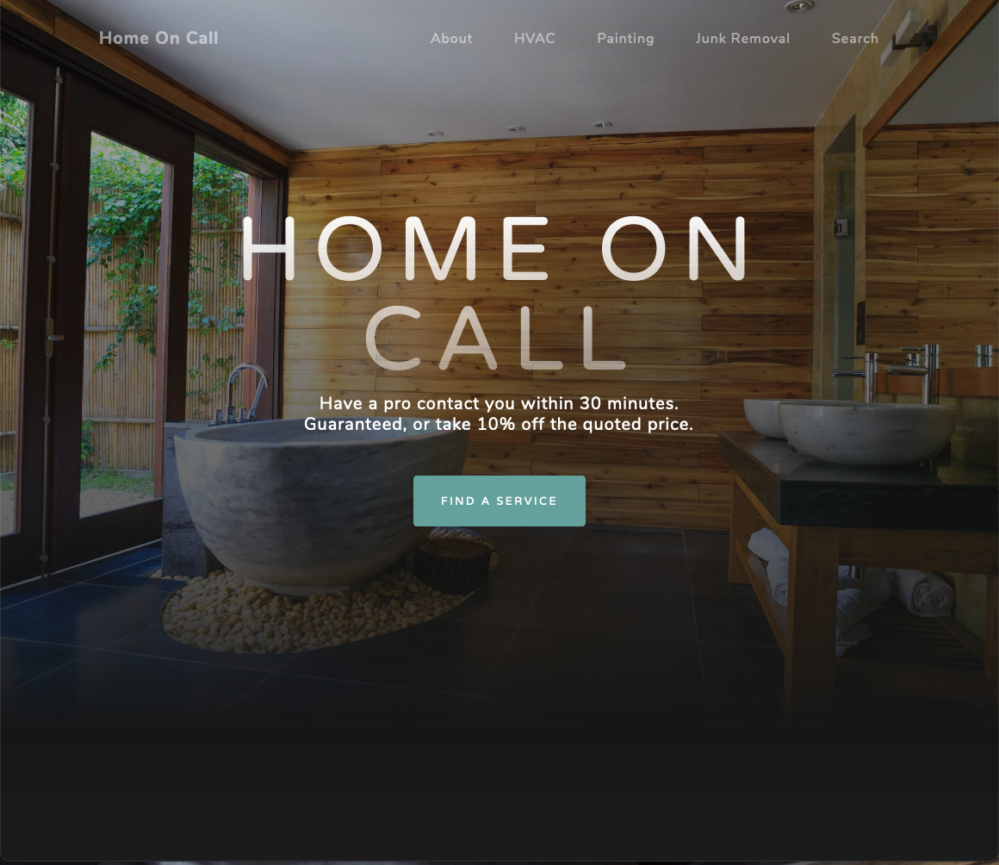
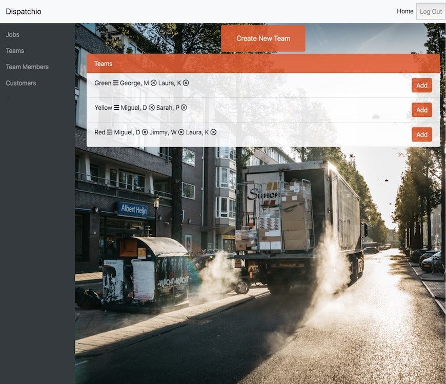
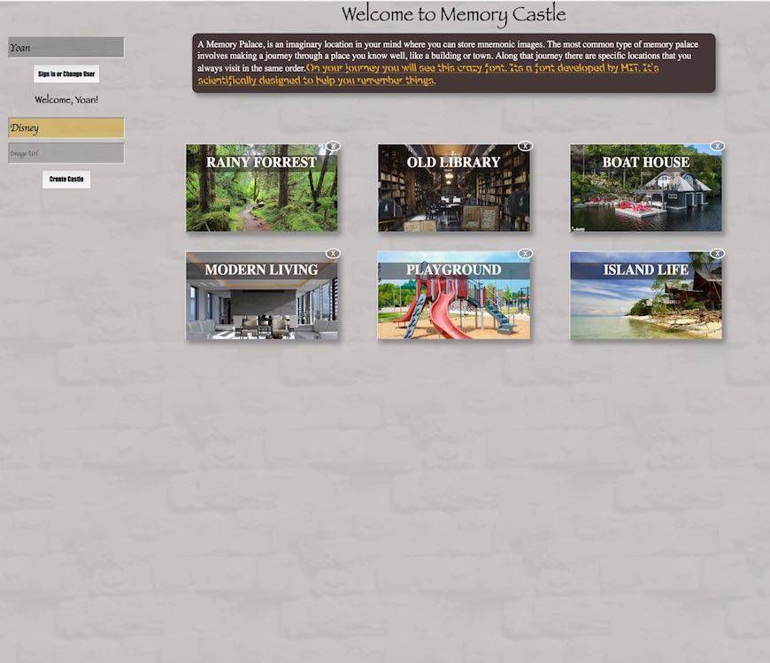
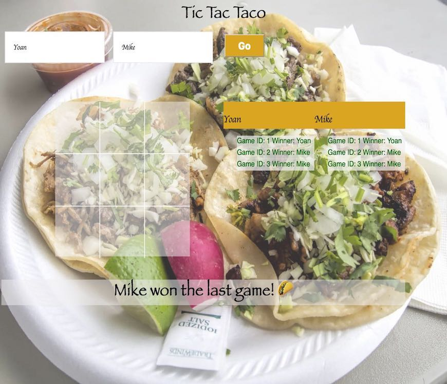

Welcome to my page A little bit about me: Briefly, I am an explant that emigrated from Cuba when I was a child in pursuit of the American dream
I'm now a web developer that is passionate about solving business problems with code. I was introduced to programming in the early 2000s and decided to pursue that career in 2008. Before that I was a member of the U.S Air Force enlisting after the events of September 11th curtailing my career for about 8 years. During this time I juggled school and military life. After my service I owned a small business which I sold until 2018 to continue my career as a software developer. I'm a skilled teacher, mentor and life long learner humbled by vastness of what I don't know.
Get to know more about or contact me by clicking one of the links on the left of the page.
Get to know more about me or contact me.
>
>
>
Home On Call
Deployed on Heroku with a Google Cloud storage bucket attached to Active Storage for images and sitemaps. Home On Call is a Ruby on Rails application that uses Tiny MCE for text editing and Action Mailer for important emails sent to customers and clients when they take certain actions. It has an admin backend complete with 9 models to create a content management system that auto creates local content from templates. Jquery and Javascript is used for multistep forms and to give admin users feedback about the content they write. I leveraged the use of layouts, custom model methods and applied the Law of Demeter to keep my controllers as skinny possible. I also used helper modules to customize content by creating unique pages through a "muxer" that creates custom content based on city and service in database. The Google Places and Google Maps API was used to create fresh dynamic content on each of those pages. I took cost into consideration and minized my use of the apis by storing the responses as json objects in the backend. This application is a CMS for business service listings using the latest in SEO markup techniques to rank highly on search engines.

Dispatchio
An application that allows businesses with a mobile workforce to dispatch their team members and get updates of the jobs they're doing. Built using React and Redux on the front end and Ruby on Rails on the backend. I also used JSON Web Tokens for authorization. The app has two views, one for managers and owners that presents a dashboard. The seond view is for employees that only shows the jobs they are assigned to.

Memory Castle
React on the front end with a Ruby on Rails backend. All custom CSS. This app allows you to create "castles" where you can affix different messages to different parts of the castle for you to easily recall later. Log in with yoan as the user name to see some examples.

Travel Pal
A travel itinenary app that allows you to create trips and add events to your trips. Built
with Ruby on Rails this app requires a user to log in or create an account. Uses Google Places API to pull data about
the locations. Sign in as yoan for the username and hello for the password to see some examples.
Tic-Tac-Taco
Built Using a Ruby on Rails backend. Players are stored in the database along with all the games they've played. Click on one of the games to see the winnning board. No use authentication required but sign in as Yoan to see some previous games.
